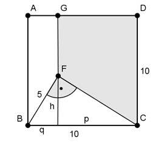

Pythagoras Aufgabe 84 Berechnen Sie die Größe der farbigen Fläche A in mm2.

Kathetensatz im Dreieck BCF: BF2 = BC * q |:BC BF2 q = ----- BC 52 q = ---- 10 q = 2,5 mm p = 10 mm - q = 10 mm - 2,5 mm = 7,5 mm Satz von Pythagoras im Dreieck BHF: BF2 = q2 + h2 | -BH2 h2 = BF2 - q2 h2 = 52 mm2 - 2,52 mm2 = 18,75 mm2 |√ h = 4,3 mm FG = HG – h = 10 mm - ,3 mm = 5,7 mm FG + CD A = --------- * p 2 5,7 + 10 mm A = ------------- * 7,5 mm 2 A = 58,9 mm2